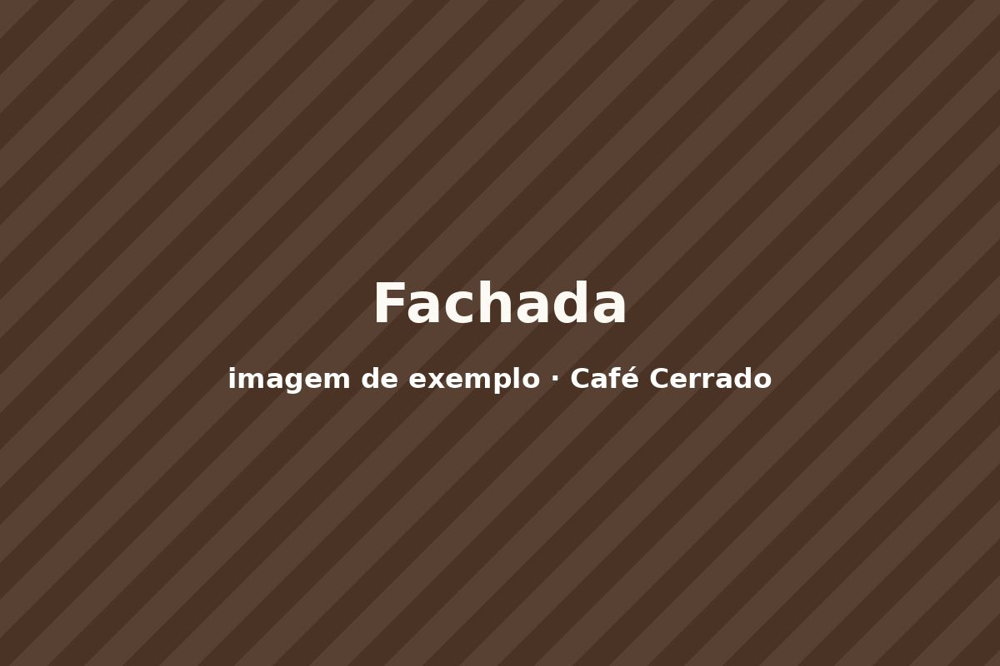

1. A página perde todo o estilo
Sintoma no console: Failed to find a valid digest in the 'integrity' attribute…
— causa: hash SRI errada ou versão da URL diferente da versão da hash.
Veja ao vivo na Demo 02.
2. O hambúrguer aparece mas não abre
Causa: o bootstrap.bundle.min.js não foi carregado, ou o
data-bs-target não bate com o id.
Abrir a página sem o bundle ↗
(estreite a janela abaixo de 992 px e clique).
3. "O meu CSS não está pegando"
Causa: o estilo.css foi carregado antes do framework, ou o seletor é menos
específico. Comparação ao vivo na Demo 03. No DevTools a
declaração perdedora aparece riscada.
4. Trocar --bs-primary não muda a cor dos botões
O que o colega fez
:root { --bs-primary: #6f4e37; }O que resolve
.btn-cafe { --bs-btn-bg: #6f4e37; … }Botões leem --bs-btn-*; --bs-primary alimenta os utilitários (.text-primary, .bg-primary).
5. Links pretos depois de definir a cor do link
--bs-link-color-rgb: #6f4e37
--bs-link-color-rgb: 111, 78, 55
A variável espera três números porque o framework monta rgba() com eles.
6. Rolagem horizontal no celular
Os dois quadros abaixo têm 360 px de largura — o tamanho de um celular pequeno.
row sem container em volta
container → row → col
7. Cards da mesma fileira com alturas diferentes
Falta h-100 no card. Comparação ao vivo na Demo 06.
8. Imagem estourando a largura
sem img-fluid

com img-fluid
9. O select continua com a aparência antiga
class="form-control" no select
class="form-select"
Cada tipo de controle tem a sua classe. A seta desenhada só vem com form-select.
10. Mobile-first entendido ao contrário
col-lg-4 sozinho
Funciona no monitor e empilha em tudo abaixo de 992 px — o que pode até ser o que você quer, mas raramente é o que você achou que escreveu.
col-12 col-md-6 col-lg-4
Declare sempre do menor para o maior. md vale a partir de 768 px, não "no tablet apenas".
11. Dois frameworks na mesma página
.card, .btn e .container existem em quase todos os
frameworks — e o reset de um desmonta os componentes do outro.
Abrir Bootstrap + Tailwind juntos ↗
e comparar com a Demo 06.